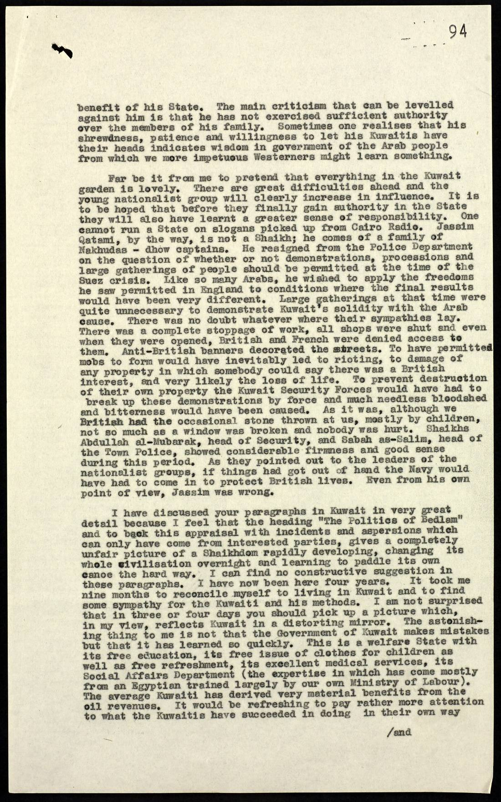

1957 · British note on political relations between the Gulf states and the UK
"He comes of a family of Nakhudas"
What it is
A British writer explains to London that Jassim Qatami is not a Sheikh but comes from a family of nakhudas, dhow captains, and gives his own view of why Jassim resigned from the police at the time of Suez.
Why it matters
A British official describing the family itself as a family of sea captains, which matches the family's history at sea, including Captain Naser Abdulwahab Al-Qatami's logbook.
Who is meant
The same Jassim Al-Qatami as the records that give his full name: Director of Police, resigned at Suez, later a nationalist member of the National Assembly.
Page copies

Original text
English translation
Sources
The National Archives, London, digitised by the Arabian Gulf Digital Archive (agda.ae). Images reproduced by permission of The National Archives, London, England.
Archive reference
- FO 371/126916 · Political relations between states in Persian Gulf and UK: UK policy
How this text was made: Typed from the archive's own text reading of the scan, corrected against the scan where the reading was garbled. … marks text left out. Arabic translation by Claude; please review.
Open in the interactive site